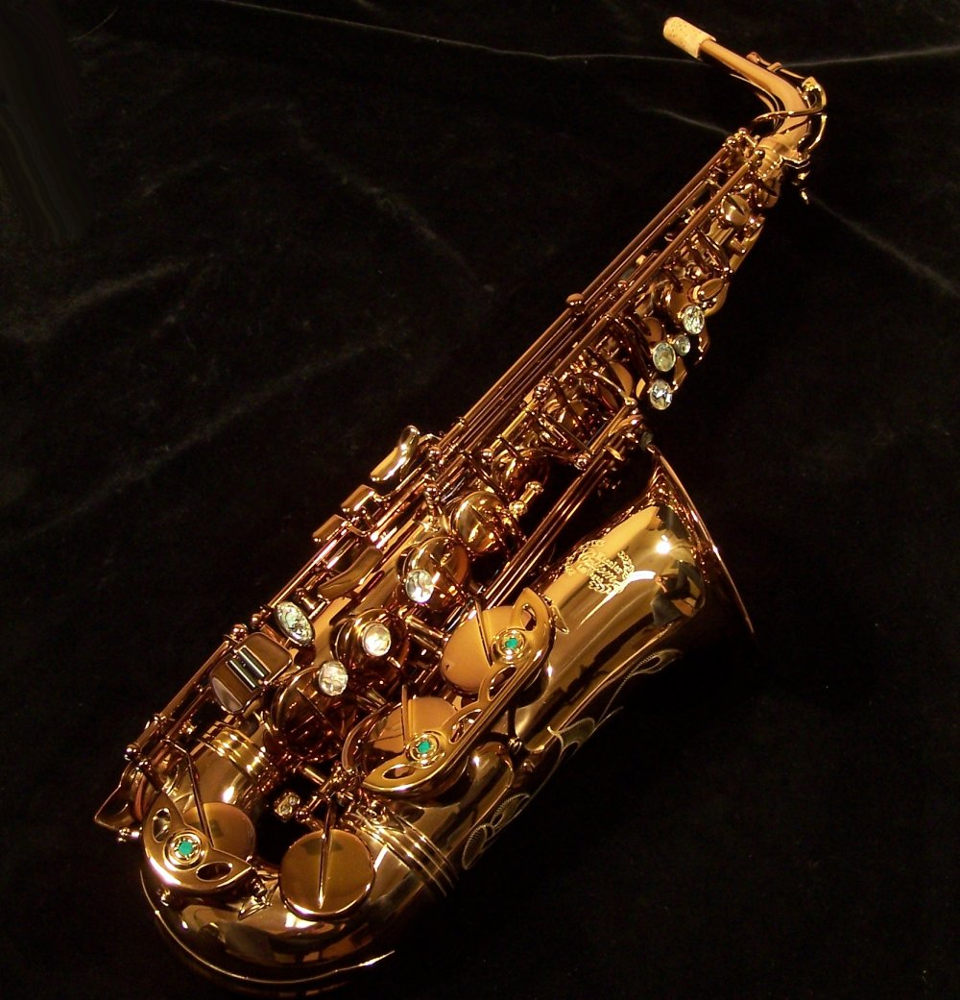
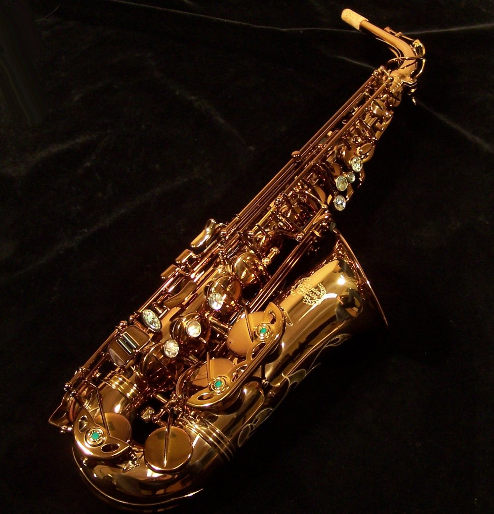
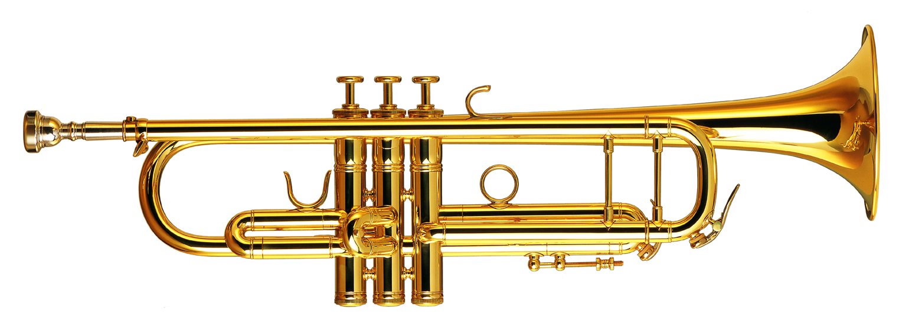
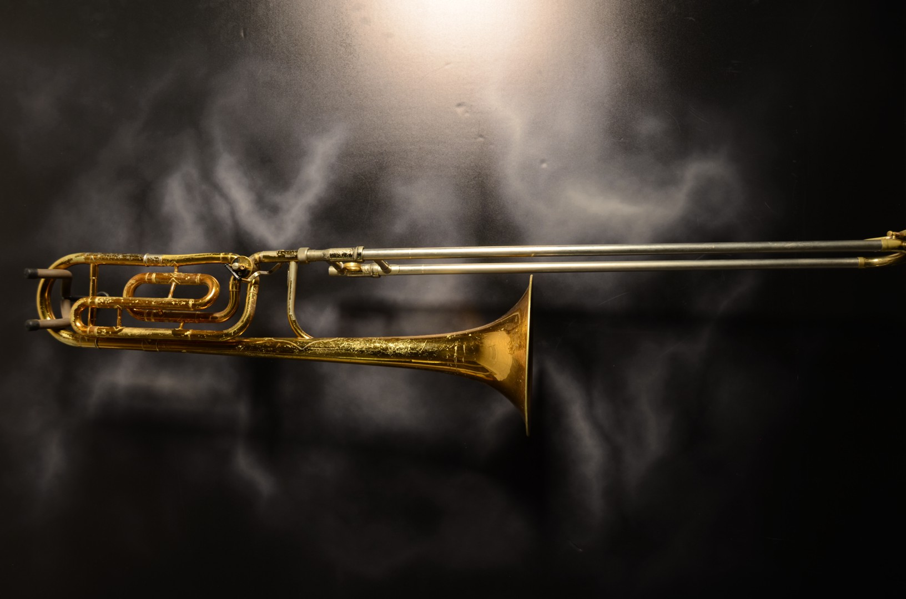
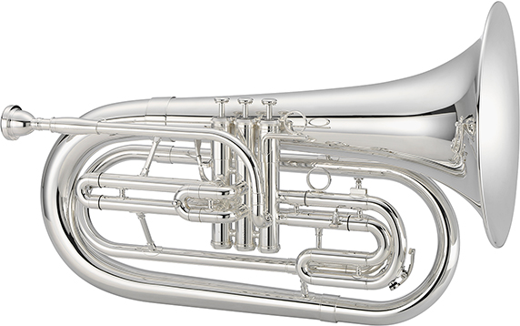
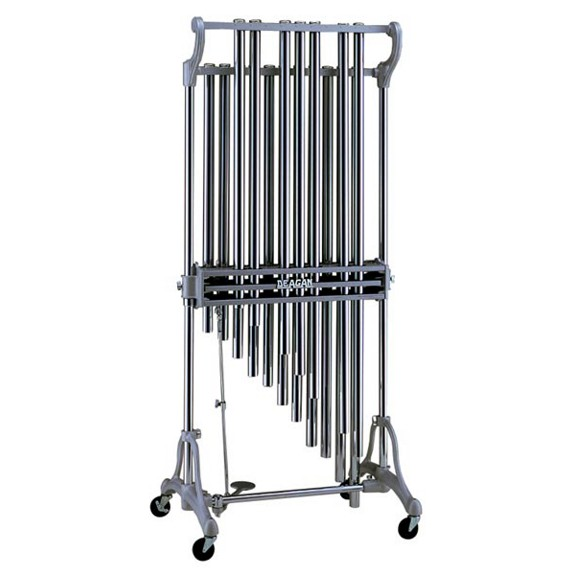
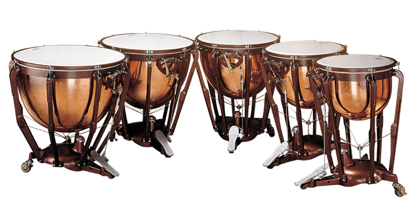
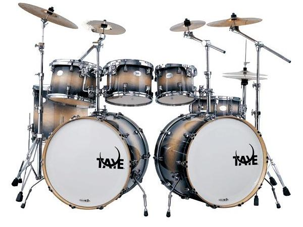

Hobby Website
My hobby is multi-instrumentalism
Home
My hobby is multi-instrumentalism, which means playing multiple instruments.
Why?
I do this because i'm a music nerd, and I can't get over each instruments individual sound, so I play every instrument I like hearing, or that interests me. each instrument has an individual sound, style, and techniques to create more interesting sounds. the main types of instruments are brass, percussion, and woodwinds.

Bibliography
Woodwinds
Woodwinds are a category of instruments defined by their method of sound creation, not necessarily the material they are made of, for example, the saxophone and flute are both made of metal. The woodwind family is made up of single reed instruments (instruments with one thin piece of wood that vibrates to create sound), like clarinet and saxophone. Double reeds (where 2 reeds work together to vibrate and create sound, like oboe or basson. And aerophones (which produce sound by vibrating an air column using air directly from your mouth), like the flute.
The reson all woodwinds sound so vastly different is because they all have different bores. The bore is the inside shape and size of an instrument. The main types of bores are conical and cylindrical. conical bores start small and increase in size, the saxophone and oboe have this type of bore. cylindrical bores remain constant diameters start to finish, however most are not like this, having a flared bell, meaning the end is conical. instruments like clarinet and flute have this.

I play several woodwinds, including: the soprano clarinet, the bass clarinet, and the alto saxophone.

 

Sound Samples
Brass
Brass instruments, despite the name, are not necessarily made of brass. In the past many have been made of copper, and there are even historical instruments in the brass family made of wood. So, what makes a brass instrument a brass instrument?
Brass instruments are defined by the way they make sound. This is by buzzing the lips. the instrument then amplifies that, and crates a harmonic series. a harmonic series is the natural progression of notes an instrument will follow. These notes are all multiples of the first frequency, or the fundamental. Say the fundamental is 100hz, the first harmonic is 200hz, which is double the original, and therefore is an octave. the second harmonic would be 300hz,then 400hz and so on. The pattern is: fundamental, octave, fifth, third, minor third, second, etc. originally, Brass instruments were confined to the notes of there particular harmonic series. However, as players improved, and composers became used to the sounds produced by brass instruments, they desired instruments capable of playing chromatically, like a woodwind or a keyboard. originally fingerholes were added, as can be seen on some classical period trumpets, an alternate method was found on natural horns, the predecessor to the modern "french horn" which really should just be called horn. They used crooks, which were tubes of metal that could be put into the horn, to change its key, and therefore its harmonic series. the problem with this was that it was slow, crooks were heavy, and switching could be loud. eventually the valve was invented, this allowed players the ability to play chromatically, because pressing each valve combination changed the harmonic series of the instrument. In one sense, pushing a horns valves was like changing its crook. This outlook however, was only used on valved bugles. On other brass instruments, they use them like keys on a woodwind.

^This is a natural horn, the small metal things around it are crooks.^

^trumpet valve, outside of the instrument^
Of the vast amount of brass instruments in existence, I play 3: trumpet, trombone, and marching baritone
  Sound Samples
Precussion
"Percussion instruments" is a fancy way of saying "things you bang a stick, hammer, or mallet, into". I wont go into there physics, because there are so many types of percussion instruments. but in short, you hit a thing, and air vibrates, so sound happens.
The two main types of percussion are pitched and un-pitched. Pitched percussion is any percussion instrument that gives multiple, distinct pitches, these are instruments like chimes, and timpani.
 un-pitched percussion are instruments like drum kits, and cymbals. which have one, indistinct pitch.

I play drums, like, drum kit.